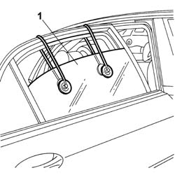
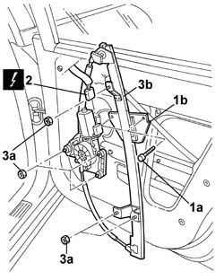

7010M20 Left or right rear door electric WINDOW MOTOR - R.R. with door panel/support frame rmeoved.
- Path
- Procedures > 70 FITTINGS > 7010 passenger compartment rear side doors > 7010M REAR SIDE DOOR ELECTRIC WINDOWS > 7010M20 Left or right rear door electric WINDOW MOTOR - R.R. with door panel/support frame rmeoved.
- Kind
- repair procedure (removal / refitting; the operation number is the code)
- Applies to
- all engines; all production periods
- Interactive page
- https://sloeber94.github.io/elrnDB-lThss/en/#/80116
Applies to: all engines; all production periods
 Removing
Removing
 Refitting
RefittingSee in Op. 5570T93 Rear side SPEAKER (one), left or right - R.R. with door panel removed
-
See in Op. 7010A04 Rear side door WATER GUARD PROTECTION - R.R. or Position with door panel removed
1. Lock the rear side door descending window glass using a suitable tool.

Applies to: all engines; all production periods
1. Undo the descending window glass mounting bracket (1b) bolts (1a).
- Raise the window glass to the end of travel position and secure it again.
2. Disconnect the electrical connector for the window opening mechanism.
 | Description | Connector |
|---|---|---|
2 | Left rear electric window motor | N065 |
| Description | Connector |
|---|---|---|
. | Right rear electric window motor | N066 |
3. Undo the nuts (3a) and remove the electric window mechanism (3b).

Applies to: all engines; all production periods
Refitting
Removing- Fit the electric window mechanism in the housing and tighten the nuts.
- Connect the electrical connector.
| Description | Connector |
|---|---|---|
. | Left rear electric window motor | N065 |
| Description | Connector |
|---|---|---|
. | Right rear electric window motor | N066 |
- Release the descending window glass and secure it to the mounting bracket, tightening the bolts.
- Check that the window opening mechanism is working properly.
See in Op. 7010A04 Rear side door WATER GUARD PROTECTION - R.R. or Position with door panel removed
See in Op. 5570T93 Rear side SPEAKER (one), left or right - R.R. with door panel removed
-
Topics linked from this page (2)
- 5570T93 Rear side SPEAKER (one), left or right - R.R. with door panel removed
- 7010A04 Rear side door WATER GUARD PROTECTION - R.R. or Position with door panel removed